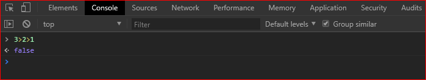
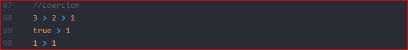
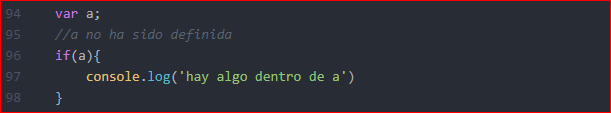
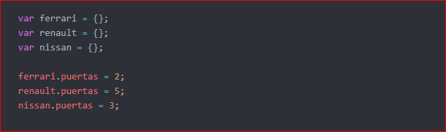

JavaScript - The weird parts
Syntax Parcers - Execution Context - Lexical Environments
Syntax Parcers
Es un programa que lee el código que escribimos, entiende lo que hace y revisa si la gramatica es valida, se llama compilador y convierte el código en un código que la máquina pueda entender
Lexical Environment
El lugar fisico en donde se encuentra el códgio que escribimos. Sirve para saber el uso de la memoria y lo que ese código puede usar dependiendo de lo que lo rodee
Execution Context
Es una envoltura que maneja el código que se está ejecutando, Hay muchos lexical environments, el que se está ejecutando es manejado a través del execution context y puede contener muchas mas cosas de las que están escritas en nuestro código.
Name/Value pairs and Objects
Name/Value pairs
Un Nombre que apunta o mapea a un unico valor.
El nombre puede ser difinido mas de una vez pero, solo puede tener un valor en cualquier contexo dado.
El valor pueden ser mas parejas nombre/valor.
ciudad = 'bogota'
nombre: ciudad
valor: bogota
Objeto
Un objeto es simplemente una colección de parejas nombre/valor, por ejemplo:

The Global environment and The global object
Cuando hablamos de global, hablamos de algo que es accesible desde cualquier parte de nuestro código y siempre hay dos cosas que se creán automaticamente para nosotros en el contexto global que son un Global Object y this, estos dos
objetos son creados para nosotros por el engine de JavaScript.
Si queremos ver esto, lo que podemos hacer es simplemente abrir en nuestro explorador un archivo html que no incluya ningúna tipo de JS asociado o podemos vincular un archivo .js pero que no contenga nada, si nos vamos a dev tools de nuestro explorador
y en la consola escribimos window o this lo que vamos a ver es lo siguiente:

Lo que nos devuelve la consola es un objeto global llamado window en ambos casos, tanto con this como con window, esto solo sucede porque estamos en el contexto global, en donde window es básicamente el contexto global
y this se refiere al contexto en donde lo estamos llamando que en este caso son lo mismo.
El concepto global significa sencillamente que no estamos dentro de ninguna función.
The Execution Context: Creation and 'Hoisting'
Que pasa cuando en JS declaramos una variable y una función y logueamos la variable y llamamos la función? de esta forma:

Si lo hacemos de esta manera lo que pensamos es que vamos a ver en la consola primero el valor de a y después de el valor de b y eso es efectivamente lo que veremos:

Ahora la pregunta es, que pasa si movemos hacia arriba el llamado a la variable y a la función?

Si ejecutamos este código en la consola del explorador vamos a ver lo siguiente:

Que pasó?? Antes tanto el llamado a la variable como a la función devolvían los valores correctos pero ahora la variable nos devuelvle el valor de undefined y la función el valor correcto.
Se dice que al momento de ejecutarse el código sucede algo que llaman 'Hoisting' y que lo que supuestamente sucede es que la declaración de variables y de funciones son movidas hacia la parte mas alta del código, pero si esto realmente sucediera,
por qué el valor devuelto a nuestra variable es undefined mientras que a nuestra función si es el correcto?
Lo que realmente pasa es que la creación de un Execution Context sucede en dos fases, una es la Fase de Creación que es en donde sucede lo siguiente:

Durante ese proceso de prepara el espacio en memoria para las funciones y las variables, que es lo que realmente es hoisting, se toma unicamente lo que está antes de una asignación = por esta razón es que en el caso de la variable se toma solamente
el nombre var a y la función se toma completa porque no hay asignación. Al tomar el lado izquierdo de la asignación el engine le asigna un marcador de posición o placeholder con el valor de 'undefined' el cual es redifinido en la fase de
ejecución si la variable es invocada después de habersele asignado un valor. Siempre es mejor idea invocar variables y funciones después de haber sido declaradas.
JavaScript and 'Undefined'
Como vimos antes, undefined es un valor que les da el engine de JS a las variables en la fase de creación, así todas las variables tengan un valor asignado siempre se les dará el valor de undefined en la primera fase, ya después en la fase de ejecuciónm,
el valor de la variable será actualizado si al momento de que esa variable sea usada su valor ya haya sido asignado.
En caso
The Execution Context - Code Execution

La fase dos es basicamente la ejecución por parte del engine de linea por linea de nuestro código, ya despues de haber sido crerado el objecto global, this y el environment externo.
Single Threaded, Synchronous Execution
Single Threader
Un comando se ejecuta a la vez, no mas de uno a la vez.
Asynchronous
Muy parecido al anterior, un comando a la vez! pero además en orden de acuerdo a como van apareciendo.
Function Invocation And The Execution Stack
Invocation
Invocar significa llamar una función, hacer que se ejecute y lo hacemos con el nombre de la función y parenthesis: a();, pero que pasa cuando invocamos una función? pensemos en el siguiente ejemplo:

Cómo sabemos, JS es Synchronous y Sinlge Threaded y por lo tanto ejecuta una linea por vez y en orden, y sabemos que un contexto de ejecución consta de dos fases, la de creación y la de ejecución.
En este ejemplo en la primera fase la función a y la función b serán guardadas en memoria y en la segunda fase se ejecutará el código linea por linea.
-
Lo primero en ejecutarse será la función a ya que es la primera en ser invocada a(); en el contexto global, como es una función, para su ejecución se crea un nuevo contexto de ejecución (Execution Context) que es apilado sobre
el contexto global, esto se denomina Pila de Ejecución (Execution Stack):

Cada contexto de ejecución tiene la fase de creració y de eejecució y además tiene su propio espacio para la creación de variables y de funciones.
-
Lo siguiente en suceder es la invocación de la función b b(); que sucede dentro de la función a y otro contexto de ejecución es creado y apilado sobre el anterior:

Al ejecutarse el contenido de b el contexto de ejecución es movido fuera del stack y se ejecuta el siguiente hacia abajo que en nuestro caso será a.
Los contextos de ejecución se van procesando de arriba hacia abajo
Function, Context, And Variable Environments
Cuando creamos una variable debemos tener claro que pasa en cada uno de los contextos de ejecución, como ya vimos, cada función crea un contexto y si las variables son declaradas dentro de un contexto, el valor de la variable solo se verá afectado
si es modificado dentro de ese mismo contexto, si hay otra variable con un mismo nombre declarada dentro de otro contexto, su valor no se ve afectado si su nombre cambia en un contexto diferente, veamos un ejemplo claro:

- La primera variable es declarada en el contexto global
var myVar = 1;
- La función a es invocada
a(); y dentro de su contexto de ejecución se declara una nueva variable myVar var myVar = 2;
- dentro de la función se invoca la función b y dentro de su contexto de ejecución se declara una nueva variable con el mismo nombre myVar
var myVar; pero no se le da ningún valor
Que vemos en la consola cuando ejecutamos este código:

A pesar de que las variables hayan sido declaradas multiples veces con un mismo nombre, el valor con el que fueron declaradas se mantiene porque fueron creradas en ambientes (environments) distintosx
The Scope Chain
Cuando hablamos de Scope nos referimos al alcance que tienen cada una de las funciones o variables que declaramos en nuetsros código, como vimos antes, cada una de las funciones creran un contexto de ejecución propio y que si una variable con
un mismo nombre es declarada dentro de diferentes contextos de ejecución su valor solo dependerá de los cambios que se hagan dentro de su propio contexto
Tambien vimos que cuando un contexto de ejecución es creado una de las cosas que también es creada para nuestro uso es el Outer Environment o entorno externo, esto es sencillamente una referencia a su enteorno externo mas próximo, veamos:

En este ejemplo tenemos dos funciones declaradas y declaramos la variable myVar en el contexto global y dentro del contexto de la función a. Dentro de la función b buscamos imprimir en consola el valor de myVar que valor
veremos?
Aquí debemos tener en cuenta lo que se denomina como Lexical Environment que se refiere al entorno dependiendo de donde ha sido la función o la variable fisicamente declarada, y como fisico nos referimos a su posición de acuerdo al resto de
declaraciones, el lugar en que hayamos escrito nuestra función.

- En el código que escribimos tanto a como b se encuentran al mismo nivel, las dos declaradas sobre el contexto global
- La variable myVar es declarada sobre el contexto global y dentro del contexto de la función a.
- la función b es invocada dentro de la función a
- Aunque la función b sea invocada dentro de a, la función b fué declarada sobre el contexto global, al no encontrar la variable myVardentro de su contexto entonces va a buscar en su entorno externo mas cercano que en este
caso es el contexto global en donde si encuentra la variable que busca
var myVar = 1; y por lo tanto 1 es el valor que veremos en la consola.
Cuando una función es invocada siempre va a tratar de buscar el valor de sus variables en su contexto de ejecució primero, si no la encuentra se va a iniciar un proceso conocido como Scopr Chain que es basicamente la busqueda de la variable
a través de todos los entornos externos que sean directamente vinculados:

Scope, ES6, and let
Scope
Es en definitiva En donde la variables se encuentra disponible en nuestro código dependiendo si es la misma variable o una copia nueva.
ES6
La última version de JavaScript, ECMASCRIPT 6 o ECMASCRIPT 2016
let
let es una nueva forma diferente de declarar variables, let permite usar block scoping vamos a hablar de ella mas adelante.
Asynchronous Callbacks
Como ya vimos JS es un lenguaje que se ejecuta de forma sincronica (Syncrhonous) lo que significa que el código se ejecuta linea por linea, en JS no es posible ejecutar varias lineas de código a la vez, esto se conoce como single threaded
Como también ya sabemos cada función va creando un Execution Stack que es el apilamiento de contextos de ejecución, pues bueno, lo que sucede es que el JavaScript Engine tiene algo llamado Event Queue o Cola de eventos. La cola
de eventos es una fila de eventos que se va creando y que el engine va ejecutando de acuerdo a como vaya terminando cada uno de los contextos de ejecución que tiene pendientes, tan pronto como termine un Execution Stack el engine se dirije
al Event Queue y ejecuta le siguiente tarea pendiente, veamos en la siguinete imagen:

Aquí tenemos una pila de contextos ejecutandose, cuando esta pila se haya completado el engine seguirá con la siguiente tarea o evento que en este caso es un click y ejecutará su contexto. No es posible que JavaScript corra o ejecute mas de un contexto de ejecución al tiempo lo vamos a comprobar con el siguiente ejercicio:

Cuando corramos este código en la consola y hagamos click sobre la página, lo que vamos a ver es que en la consola no va a imprimirse nada sino hasta que la función waitThreeSeconds termine de ejecutarse a los tres segundos, osea, hasta que
su execution stack no sea completamente ejecutado, durante los 3 segundos los eventos click van a ser puestos en cola para ser ejecutados cuando el engine se desocupe.

A pesar de que hagamos click muchas veces sobre la página, estos clicks no van a ser impresos en consola sino hasta después de que los 3 segundos hayan pasado.
Types and JavaScript
Si hemos venido de otro tipo de lenguajes de programación, vamos a ver que en JS los tipos de variable de declaran de una forma diferente.
Dynamic Typing
En JS no le tenemos que decir al engine que tipo de información va a contener la variable, el engine s eencarga de decifrar el tipo de información mientras el código se va ejecutando.
Primitive Type
Cómo sabemos JS usa un método que se llama Dynamic Typing y por lo tanto no tenemos que definir el tipo de informació de cada variable sino que el engine lo decifra por si solo, esto no quita que hayan diferentes tipos de datos o información
y este tipo de datos se denominan Primitive Types.
Primitive Types
Son tipos de datis que representan un solo valor, mas facil, todo lo que no es un objeto pues un objeto es una colección que puede ser diferentes tipos de información.
- UNDEFINED: Es inexistencia, una variable que no existe. No debemos asignar este valor a ninguna variable, es solo para uso del engine al momento de crear la memoria para nuestro código.
- NULL: También reperesenta inexistencia, este si lo podemos usar para definir una variable igual a nada
var a = null;
- BOOLEAN: Puede ser o true o false solo uno de los dos
var a = true;
- NUMBER: En JS solo hay un tipo numerico y siempre es un floating point number o número decimal, aunque se puede volver entero o integer es realmente un decimal.
- STRING: Es una sequencia de caracteres que se encuentran entre comillas simples ' ' o dobles " ".
- SYMBOL: Es usado en ES6, hablaremos de el en otro momento.
Operators
Un operador es una función que es sintacticamente escrita de manera distinta. Los operadores generalmente reciben un parametro y devuelven dos
Cuando usamos un operador +, -, >, <, etc lo que realmente estamos usando es una función que ha sido pre escrita para que nosotros podamos usar los operadores más rapidamente, en lugar de tener por ejemplo que escribir: function suma(a, b){return a + b} lo que hacemos es a + b, lo mismo sucede con todos los operadores
Operator Precedence and Associativity
Operator Precedence
Es simplemente que funcion de operador es llamada de primero, las funciones son llamadas en order de precedencia, la precedencia mas alta gana.
Operator Associativity
La asociatividad determina la dirección en la que operadores con la misma precedencia son evaluados.
Ver documento en MDN
Este documento es importante porque nos muestra los valores de precedencia que tiene cada operador y además nos muestra la asociatividad o dirección en que operdaores iguales son evaluados.
Qeu pasa si tenemos lo siguiente:

Si alguna vez en nuestras vidas tuvimos clase de matematicas, sabemos que la multiplicación va primero y por lo tanto el resultado es 15. Si vemos la tabla de precedencia veremos que el valor que tiene la multiplicación es 14 mientras que suma tiene
un valor de precedencia de 13, los mayores ganan!
Y ahora que pasa si tenemos oo siguiente:

Que vamos a ver en la consola?
Para saberlo tenemos que ver el sentido de asociatividad que tiene la igualdad =, en la tabla vemos que es de derecha a izquierda lo que quiere decir que primero se definen los de la derecha que en nuestro caso será b = c o en otras palabras, b es igual a c, c es 4 y por lo tanto b será 4. a será lo que es b y como en este punto b ya es 4, entonces a es también igual a 4.
Coercion
En JS coercer u obligar se refiere la acción que genera el engine en algunos momentos sobre algunos valores, lo que hace JS es convertir su tipo de valor a otro tipo de valor.
Por ejemlpo tenemos lo siguiente var a = 1 + '5' como
vemos uno de los valores es declarado cómo un número y el otro como un string, cuando mostramos el resultado en la consola veremos un 12. Esto sucede porque el otro es un string y por lo tanto el engine convertirá el número en un string
para buscar darle un resultado coherente al usuario.
Comparison Operator - Operadores de comparasión
Muchas veces usamos operadores de comparación y aunque creemos que tenemos claro el resultado que nos va a arrojar en algunas ocasiones nos podemos sorprender (a mi me sucedió) para comenzar, veamos el siguiente ejemplo: 1 < 2 < 3 en engine en este ejemplo nos va a arrojar true lo que en realidad tiene sentido porque 1 es menor a dos y dos es menor que 3.
Ahora intentemos lo siguiente: 3 > 2 > 1 que vemos en la consola??

Vemos false por que? si 3 es mayor que 2 y 2 es mayor que 1?
Si vamos a mirar el documento que nos habla sobre la precedencia en los operadores aquí el link de nuevo vemos que el operador > es analizado por el engine de izquierda a derecha, entonces que pasa?

Pues lo que sucede es que primero se evalúa la primera expresión 3 > 2 que dá como resultado el boolean true quedando la expresión true > 1 por ser evaluada. Pero que pasa aquí? pues bueno, como sabemos
el engine va hacer lo posible por dar un resultado coherente y en este caso va a transformar el valor del boolean true por el número 1 dejando la siguiente expresión 1 > 1 y como sabemos 1 no es mayor que 1 y el resultado
va a ser false.
Así como el engine cambia el valor de true a 1, hay muchas otras combinaciones y cambios que pueden terminar dando un reultado diferente, aquí no vamos a profundizar en este punto pero si es importante tener claro que el operador == nos
resuelve igualdad por ejemplo: 3 == '3' = true en caso de que uno de los dos valores sea de un 'tipo' diferente entonces será cambiado (la mayoría de las veces) para que la operación tenga un resultado.
Por otro lado tenemos el operador === que nos resuelve una igualdad estricta por lo tanto 3 === '3' = false y 3 === 3 = true ningún valor es cambiado, solo se devuelve true si es una igualdad completamente
estricta.
Booleans Existence
Es importante saber que la falta de existencia como undefined, null o "" son evaluados como booleans false sabiendo esto podemos usar esta evaluación a nuestro favor, siempre que usamos las declaraciones condicionales (conditional statements)
if lo que se encuentra dentro de la condición siempre va a buscar ser evaluado como un boolean, por ejemplo:

Cuando ejecutamos esta declaración en la consola nada va a ser impreso, por que? porque a la variable a no se le ha dado ningún valor y como sabemos, en la fase de creación a todas las variables se les asigna por el engine el valor de undefined el cual al ser evaluado como boolean nos da el valor de false.
0 también es false
Es importante tener en cuenta que el valor 0 también es evaluado como falso por el engine y 0 no tiene que significar inexistencia, eso depende de nuestro código y que queremos que haga, entonces is por alguna razón el valor de la variable
llega a tener el valor de 0 pero lo que queremos es evaluar su existencia (undefined, null, '') es posible que tengamos un resultado diferente al que esperamos, en este casos podríamos ajustar mejor la condición de esta manera: (a || a === 0),
así si la primera condicion es inexistente incluyendo 0, será evaluada como false, pero la segunda será true porque a será en nuestro ejemplo igual a 0 por lo tanto la condición será evaluada como true false||true da como
resultado true.
Default Values
Una forma interesante de asignar valores por defecto es mediante el uso de || por ejemplo podemos decir nombre = nombre || 'no hay nombre', como sabemos el operador or evalúa las condiciones buscando convertirlas en
booleanos, así el primoer que resulte true será el valor que se asignará, en este caso si nombre resulta falso ej: undefined, null, false o 0 entonces la segunda será evaluada, el engine la convertirá u obligará a ser booleano
y como la segunda condición es un string no vacío, entonces será true y el valor que se le asignará a la variable nombre será no hay nombre.
FRAMEWORK ASIDE:Default Values
Es muy probable que en algún momento queramos usar diferentes frameworks o librerias en un mismo proyecto y también es posible que estas usen el contexto global para declarar variable y podría suceder que la declaración de variables colisione, en
estos caso es muy probable que veamos cosas así: window.nombreDeVariable = window.nombreDeVariable || 'otro valor' lo que se logra con esta verificación es que no se sobreescriban valores que ya existen o variables que ya están declaradas
y definidas, como ya vimos esto significa: Si la variable ya existe entonces no la modifique pero si no existe cambiela por este nuevo valor que le estoy dando.
Objects and Functions
Como ya vimos antes los objetos se pueden componer de variables primitivas como numeros o string, también puede contener otros objetos o también pueden contener método que en realidad son funciones que devuelven algún valor.
Cómo creamos lo objetos?
En realidad podemos crerar un objeto de diferentes formas, resumidas son las siguientes:
- Object literal: Es a través del uso de los corchetes o curly braces
var carro = { marca: 'Ferrari, modelo: 1989, modelo: Testarossa' }
- También lo podemos hacer a través del constructor Object()
var carro = new Object()
- Podemos usar una función constructora
var Obj = function(name){
this.name = name
}
var miCarro = new Obj('Mi Nave');
Acceder a los objetos y agregar propiedades
Cómo vimos antes, con lo corchetes o curly braces podemos declarar un objeto y además decalarar propiedades al mismo tiempo, agregar propiedades se puede hacer de multiples formas así como acceder a ellas
- Con parentesis cuadrados [ ] - tenemos el objeto carro ya declarado y declaramos la propiedad marca -
carro['marca'] = "Alfa Romeo"
Para acceder a la marca hacemos lo siguiente:
carro[marca]
- Con la notacion punto . - funciona igual que los brackets ya cuando tenemos un objeto declarado, para agregar una propiedad al objeto carro:
carro.marca = 'Tesla'
Para conocer el valor de la propiedad marca del objeto carro:
carro.marca
También podemos crerar objetos dentro de objetos de la misma usando el mismo principio
vehiculo.carro.marca = 'Audi'
Y accedemos de la misma forma:
vehiculo.carro.marca
Objects and Object Literals
Cuando hablamos de objetos anteriormente nos referimos la forma de crear objetos mediante new Object() y mediante { } bueno, en realidad el uso de los corchetes es simplemente un atajo para hacer lo mismo y se le llama Object Literal y como vimos también podemos inicializarlo al mismo tiempo agregandole propiedades:

FRAMEWORK ASIDE: Faking Namespaces
Namespace: A container for variables and functions, typically to keep variables and functions with the same name separate.
Los namespaces en los lenguajes de programación se refieren a un container que contiene un grupo único de identificadores y simbolos, en JS no los tenemos pero los podemos emular con el uso de objetos.
Por ejemplo queremos hacer uso de una variable que tenga un mismo nombre para diversos objetos, como lo vimos ahora con el objeto carro, es muy probable que queramos tener varios carros pero cada uno con diferentes caracteristicas aunque mismas propiedades (marca, no de puertas, etc):

De esta forma podemos tener el mismo nombre de variable que pertenece a un objeto diferente.
JSON and Object Literals
Si hemos visto anteriormente la forma en la que se escribe JSON y vemos la forma en que se escribe un Object Literal vamos darnos cuenta que son muy similares:

Cómo vemos son muy parecidos y lo que cambia son las comillas en los nombres de las propiedades. JSON es un formato muy util para compartir información y JS por medio de un par de funciones nos permite pasar la información de JSON a Object Literal y viceversa.
JSON.stringify nos permite pasar de Object literal a JSON:

JSON.parse nos permite pasar de JSON a Object Literal:

Las Funciones son Objetos!
CONCEPTUAL ASIDE: By Value vs by Reference
Este es un concepto que debemos tener claro. Cuando asignamos a una variable un valor primitivo como un numero on un string, se asigna un espacio en la memoria que contiene ese valor y una dirección que permite que la variable apunte a ese valor a = 3;. Si asignamos esa variable a otra variable b = a; como el valor de a es un primitivo, entonces, se asignará un nuevo espacio en memoria para bque contendrá una dirección diferente que apunte a su valor, en resumen en memoria habrá en un comienzo y de acuerdo a nuestro ejemplo una variable a y otra b y cada una apuntará a un valor 3 completamente diferente e independiente ubicados en una dirección en la memoria completamente distint.

Esto lo podemos probar de la siguiente manera:

Aunque b haya sido declarada con el valor de a aunque cambiemos el valor de a el valor de b no cambia.
Con los Objetos pasa algo distinto, si al objeto c le asignamos el objeto d entonces cuando modifiquemos (también se dice mutar en programación) el objeto c, este cambio también se verá reflejado en el objeto d, esto sucede porque a diferencia de lo que pasa con las valores primitivo, en los objetos se crea una Referencia al objeto y NO se crea un objeto nuevo como pasa con los primitivos. Osea que tenemos dos variables que apuntan a una misma direcció en la memoria.

Lo probamos con el siguiente ejemplo:

Aunque cambiamos solamente el objeto c vemos que el valor de la propiedad país cambió en los dos objetos, el mismo principio aplica así pasemo el objeto como un parametro dentro de una función

Importante! el simbolo asignación o igual (=) es el que define si un elemento se crea o no en la memoria, en caso de que el Objeto asignado no se encuentre ya en la memoria, entonces será creado en una nueva ubicación, hay que tener esto claro poque si por ejemplo tenemos:

A pesar de que en un inicio las dos variables apuntaban a un mismo objeto, al una de las variables ser asignada a un objeto distinto, este nuevo objeto es creado en memoria y solo la variable al que ha sido asignado apuntará a su ubicació en memoria.
Objects, functions and 'this'
Seguramente hemos visto el uso de this en algún código o lo hemos usado nosotros mismos, pues bueno, seguramente lo vamos a ver muchas veces mas porque se usa con bastante frecuencia, pero bueno, que es this?
Generalmente se piensa que this hace referencia al contexto desde donde se invoca como una función o un objeto, pues bueno si aún lo creemos así debo decirles que NO es correcto, pues this hace solamente referencia al contexo principal de un Objeto y no de una función, ya sé que dijimos que las funciones son objetos pero son objetos especiales, son objetos de primera clase que tienen 'poderes' especiales por decirlo de alguna manera. En resumen, THIS hace referencia al primer nivel del contexto de un Objeto (no funciones) lo demostramos de la siguiente forma:
Mostremos en la console en el contexto global el valor de this:

Nos devuelve el contenido del contexto global que es Window
Ahora dentro de una función mostremos en consola el valor de this:

Seguimos viendo el contenido del objeto global Window a pesar de que estamos dentro de una función.
Ahora, dentro de un Objeto creemos un metodo que imprima en consola el valor de this:

Ahora vemos que el valor mostrado en la consola es el objeto dentro del que se encuentra el método y NO el contexo global, esto nos demuestra que this lo podemos usar principalmente dentro de los objetos si es que queremos referirnos al contenido de ese objeto de alguna manera, en nuestro ejemplo podemos cambiar la marca de nuestro carro refiriendonos a this:

Importante! que pasa si dentro de un método tenemos otra función que busca hacer uso del contenido del objeto mediante this? Lo primero que pensamo de acuerdo a lo que vimos es que this dentro de un objeto hace referencia al objeto en el que se encuentra, eso lo pensamos muchos y a lo mejor no estaría mal que fuera así, de hecho seríá hasta lógico pero NO ES ASÍ cuando creamos una función dentro de un método, y esta función hace uso de this el contexto al que se hace referencia es de nuevo el contexto global:

En el ejemplo anterior vemos como al tratar de imprimir en consola el contenido de this mediante una función que se encuentra dentro de un método lo que muestra la consola es el contenido del contexto global o Window. Una solución común para estos casos es crear una variable dentro del Objeto que haga referencia a this esta variable es muchas veces llamada self.
self
Esta es una variable que se crea dentro del objeto y que resuelve el comportamiento de this dentro de funciones creadas dentro de los método. Cómo ya vimos antes, cuando declaramos una variable y le asignamos un objeto, lo que hace el engine es crear una referencia hacia el objeto, por lo tanto podemos hacer self = this aquí un ejemplo:

Ahora vemos que la referencia del objeto se ha mantenido y que el objeto impreso en la consola es el mismo objeto en el que se encuentra la función.
ARRAYS: Collections of anything
En JS a diferencia de otros lenguajes de programación, podemos poner lo que queramos en un array y combinarlo como queramos, podemos tener en un mismo array objetos, funciones, primitivos lo que queramos, por ejemplo: